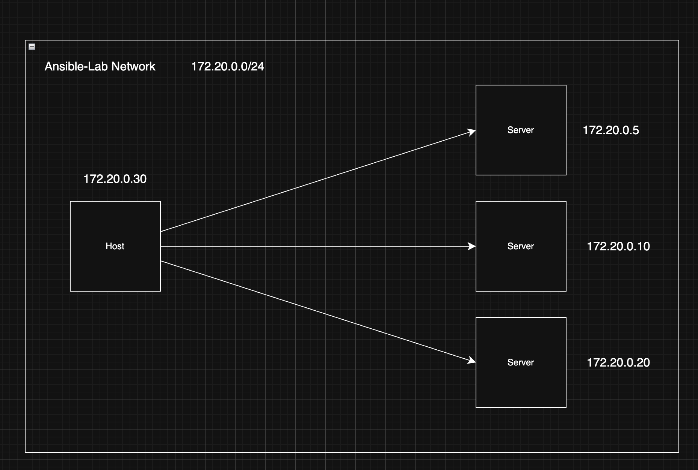
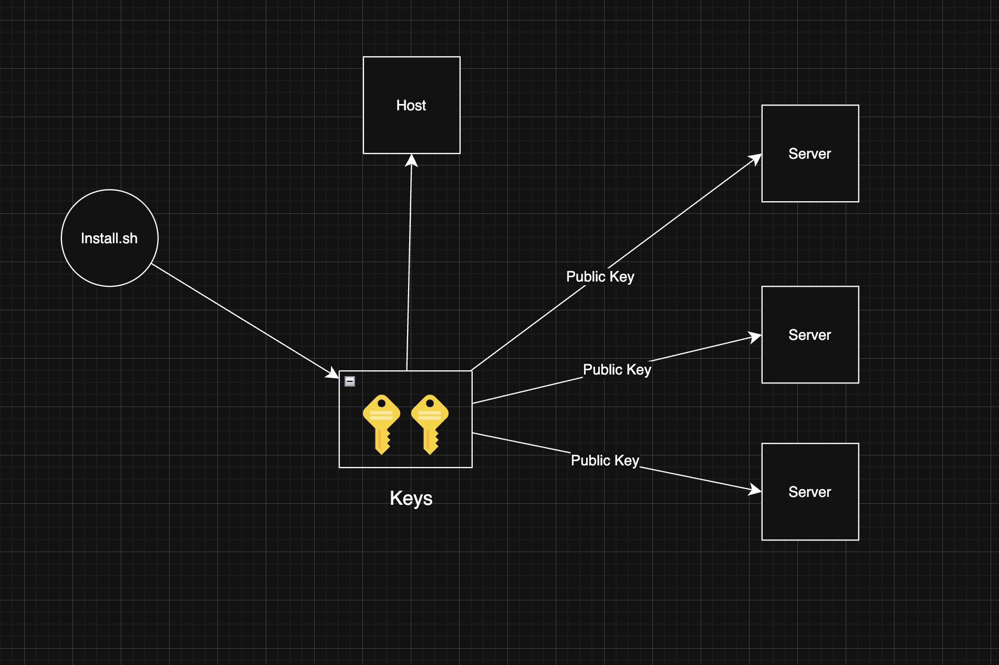

Project Overview
This project demonstrates how configuration management tools can be used to provision and manage infrastructure components such as load balancers, web servers, and databases in a controlled lab environment.
Architecture Overview

Network Topology and Static IP Routing
ASCII Representation
+--------------------+
| Ansible Host |
+----------+---------+
|
+-----------------+-----------------+
v v
+-------------------+ +-------------------+
| server_2 |-------------->| server_3 |
| Load Balancer(80) | | App Server(8080) |
+---------+---------+ +---------+---------+
|
v
+-------------------+
| server_1 |
| Database (5432) |
+-------------------+Getting Started
Build and start the infrastructure:
./ansible-lab.sh init
./ansible-lab.sh start

Initialization Process: Key Generation and Authentication Flow
How To Use the Lab
Execute these steps inside the host container, which acts as your Ansible Control Node.
1. Access the Control Node
docker exec -it host bash2. Create the Inventory File (inventory.ini)
[databases]
server_1 ansible_host=172.20.0.10 ansible_user=root
[load_balancers]
server_2 ansible_host=172.20.0.20 ansible_user=root
[app_servers]
server_3 ansible_host=172.20.0.5 ansible_user=root
[all:vars]
ansible_ssh_common_args='-o StrictHostKeyChecking=no'3. Create your First Playbook (ping.yml)
---
- name: Ping all servers to verify connectivity
hosts: all
tasks:
- name: Ensure target machines are responding
ansible.builtin.ping:4. Execute the Playbook
ansible-playbook -i inventory.ini ping.yml5. Working with Roles
ansible-galaxy init roles/nginxCreate roles/nginx/tasks/main.yml:
---
- name: Install Nginx
ansible.builtin.apt:
name: nginx
state: present
update_cache: yesCreate master playbook site.yml:
---
- name: Configure Load Balancers
hosts: load_balancers
become: yes
roles:
- nginxansible-playbook -i inventory.ini site.yml